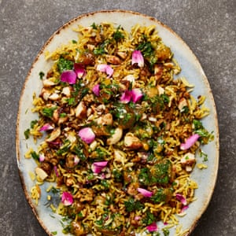

Lamb pilaf with sweet almonds and sour plums

Iranian dried sour plums, known as aloo bukhara, are like nature’s candy; they are beautifully orange, sweet, sour and hard to resist. They are used in a variety of Persian dishes but are also great to snack on. You can find them in most Middle Eastern supermarkets, but if you can’t get your hands on any, then use dried apricots or sour cherries instead. This is a celebration dish, perfect for sharing and well worth the effort.
For the sweet almonds
For the sour plum dressing
Heat the oven to 180C (160C fan)/gas 4 and line a small oven tray with baking paper. On a medium-high heat, warm three tablespoons of oil in a large saucepan for which you have a lid. Add the onion and cook, stirring often, until softened and browned – about seven minutes. Add the garlic, lamb, saffron, cardamom, cinnamon and half the rose petals, and cook, stirring to break up the mince, until no longer pink, about four minutes. Add 250ml water, a teaspoon of salt and a good grind of pepper, and cook for seven minutes, stirring occasionally, until all the liquid is absorbed.
Add the rice, herbs, 520ml hot water, a teaspoon of salt and a good grind of pepper, and bring to a boil. Cover the pan tightly with foil, then a lid, and turn the heat to its lowest setting. Cook for 15 minutes, then set aside, still covered, for another 15 minutes.
Meanwhile, make the almonds. Put the oil, sugar, cinnamon and a tablespoon of water in a small saucepan on a medium heat. Bring to a boil, stirring often, then add the almonds. Cook, stirring, for three minutes, then transfer to the lined oven tray and bake for 12 minutes, stirring once halfway, until golden. Leave to cool, then roughly chop. Meanwhile, mix all the dressing ingredients and a quarter-teaspoon of salt in a small bowl.
To serve, spread out the rice on a large platter. Top with the almonds and remaining rose petals, and spoon over the dressing.